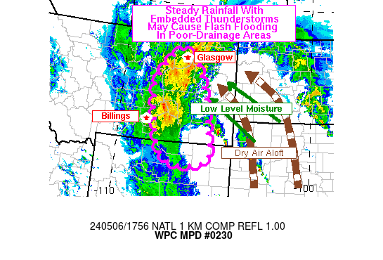

| WPC Met Watch |
|
|
Mesoscale Precipitation Discussion: #0230 |
|
(Issued at 159 PM EDT Mon May 06 2024
) |
|
| MPD Selection |
|
|
|
|
|

Mesoscale Precipitation Discussion 0230...Corrected
NWS Weather Prediction Center College Park MD
159 PM EDT Mon May 06 2024
Corrected for Graphic
Areas affected...Portions of Eastern Montana and Northeastern
Wyoming
Concerning...Heavy rainfall...Flash flooding possible
Valid 061659Z - 062300Z
SUMMARY... The comma-head region of a deepening cyclone will
feature steady rainfall with embedded thunderstorms capable of
producing flash flooding.
DISCUSSION...Low-level moisture inflow into portions of the upper
High Plains is advecting an air mass with dew points into the 50s
into this typically dry part of the country. This is being driven
by a developing strong low-pressure system threatening to break
monthly low pressure records in the western Dakotas. The moisture
feed into the storm originates in the Gulf, and is advecting into
the area on up to 50 kt winds in the lower levels. Meanwhile, as
is typical with mature storms, dry air aloft making up the comma
is ending the precipitation further east into the western Dakotas.
The dry air aloft is enhancing potential instability, which has
allowed for a few thunderstorms to develop on the
dry-slot/comma-head interface. These storms have caused greater
than an inch per hour rainfall rates, which have already caused
some localized flash flooding.
CAMs guidance suggests additional thunderstorm development is
likely, as noted by the line extending north of the Black Hills.
The storms are most likely to form along the eastern edge of the
precipitation shield, or as the current line shows, extending as a
band of storms into the dry slot. Should the storms move over
flood sensitive areas, additional flash flooding is possible.
Wegman
ATTN...WFO...BYZ...GGW...RIW...UNR...
ATTN...RFC...MBRFC...NWC...
LAT...LON 48340694 48170640 48050624 47650605 46740561
45920545 44590520 44280563 44190675 44250714
44730778 45910816 46410823 46950826 47430803
48110748
Download in GIS format: Shapefile
| KML
Last Updated: 159 PM EDT Mon May 06 2024
|